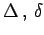
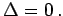
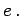
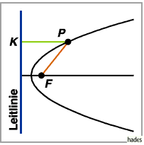

- 1. Allgemeine Gleichung der Kurven 2. Ordnung
- Mit der allgemeinen Gleichung der Kurven 2. Ordnung
| ax2 + 2bxy + cy2 + 2dx + 2ey + f = 0 |
(3.375a) |
werden die Ellipse, ihr Spezialfall der Kreis, die Hyperbel, die Parabel oder ein Geradenpaar (zerfallende Kurve 2. Ordnung) definiert. Die Rückführung auf die Normalform kann mit Hilfe der in den Tabellen
Transformation der Kurvengleichungen 2. Ordnung auf die Normalform, Mittelpunktsgleichungen
und
Transformation der Kurvengleichungen 2. Ordnung auf die Normalform, parabolische Gleichungen
angegebenen Koordinatentransformationen erreicht werden.
Hinweis: Die Koeffizienten in der obigen Gleichung (3.375a) sind nicht identisch mit den Parametern der speziellen Kegelschnitte in den Gleichungen für die Ellipse, Hyperbel und Parabel.
- 2. Invariante einer Kurve 2. Ordnung
- Invariante einer Kurve 2. Ordnung sind die drei Größen
Bei Drehungen des Koordinatensystems bleiben sie erhalten, d.h., wenn nach einer Koordinatentransformation die Kurvengleichung die Form
| a'x'2 + 2b'x'y'+ c'y'2 +2d'x' + 2e'y' + f'= 0 |
(3.375c) |
hat, dann liefert die Berechnung dieser drei Größen  und S aus den neuen Konstanten die ursprünglichen Werte.
- 3. Gestalt der Kurven 2. Ordnung (Kegelschnitte)
- Wenn ein gerader Kreiskegel von einer Ebene geschnitten wird, dann entsteht auf ihr ein Kegelschnitt. Geht die schneidende Ebene nicht durch die Spitze, dann ergibt sich eine Hyperbel, Parabel oder Ellipse in Abhängigkeit davon, ob die Ebene parallel zu zwei, nur zu einer oder zu keiner Erzeugenden des Kegels verläuft. Geht die schneidende Ebene durch die Kegelspitze, dann entstehen zerfallende Kegelschnitte mit  Als Kegelschnitt eines in einen Zylinder entarteten Kegels, dessen Spitze sich im Unendlichen befindet, ergeben sich zwei parallele Geraden. Der Bestimmung der Gestalt der Kegelschnitte dienen die Tabellen
Transformation der Kurvengleichungen 2. Ordnung auf die Normalform, Mittelpunktsgleichungen
und
Transformation der Kurvengleichungen 2. Ordnung auf die Normalform, parabolische Gleichungen.
- 4. Leitlinieneigenschaft der Kurven 2. Ordnung
- Der geometrische Ort aller Punkte P mit einem konstanten Verhältnis e der Abstände zu einem festen Punkt F, dem Brennpunkt, und zu einer gegebenen Geraden, der Leitlinie, ist eine Kurve 2. Ordnung mit der numerischen Exzentrizität 

Für e <1 ergibt sich eine Ellipse, für e =1 eine Parabel und für e >1 eine Hyperbel.
- 5. Bestimmung der Kurve durch fünf Punkte
- Durch fünf vorgegebene Punkte kann eine und nur eine Kurve 2. Ordnung gehen. Wenn drei dieser Punkte auf einer Geraden liegen, dann ergibt sich ein zerfallender Kegelschnitt.
- 6. Polargleichung der Kurven 2. Ordnung
- Alle Kurven 2. Ordnung werden mit der einen Polargleichung
beschrieben, wobei p der Halbparameter und e die Exzentrizität sind. Dabei liegt der Pol im Brennpunkt, während die Polarachse vom Brennpunkt nach dem nächstgelegenen Scheitelpunkt hin gerichtet ist. Für die Hyperbel definiert diese Gleichung nur einen Ast.